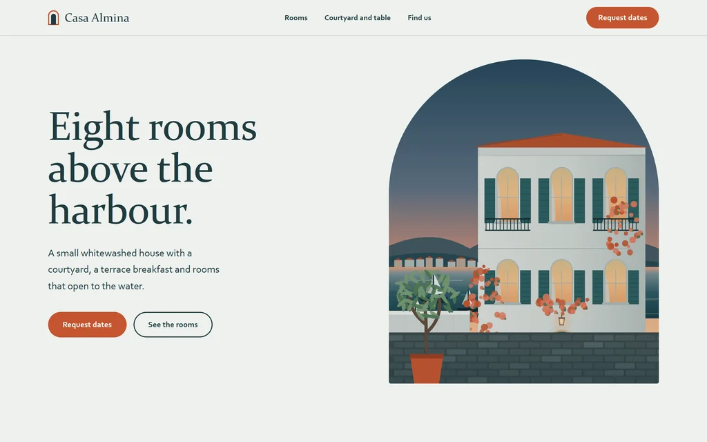

DIGITALSTUDIO FÜR UNTERNEHMEN, DIE WACHSEN WOLLEN
Wir bringen dich näher an deine Kunden.
Website, Video und Anzeigen, die zusammenarbeiten und dein Unternehmen den richtigen Menschen näherbringen. Ein Team, eine klare Strategie.
Isolierter M3-Prototyp · nur Verhaltensnachweis · Links zeigen auf App-Routen, die hier nicht ausgeliefert werden · EN ES DE
DIGITALSTUDIO FÜR UNTERNEHMEN, DIE WACHSEN WOLLEN
Website, Video und Anzeigen, die zusammenarbeiten und dein Unternehmen den richtigen Menschen näherbringen. Ein Team, eine klare Strategie.

01
Ein klarer, schneller und gepflegter Webauftritt, der Besuche in Anfragen verwandelt.
Wir gestalten und pflegen deine Website, damit sie klar erklärt, was du tust, und es leicht macht, dich zu kontaktieren.

02
Wir helfen dir, gefunden zu werden, wenn jemand in der Nähe nach deinem Angebot sucht.
Wir arbeiten an deiner Präsenz in Suche und Karten, für jeden Markt, in dem du Kunden hast, nicht nur in einer Region.

04
Kampagnen auf Google und Meta, verbunden mit Zielen und Ergebnissen, die du verstehst.
Kampagnen führen auf passende Seiten und werden in einem klaren Ergebnis-Dashboard gemessen.